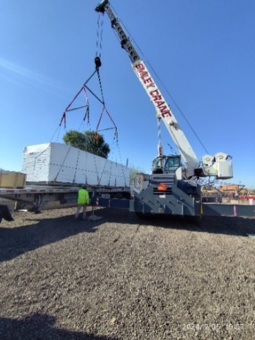

XCMG ARC CRANE BENCHMARK
XCMG XCR75U 75t 起重机竞品对标
按同吨级比较运输、底盘机动、主副臂、支腿、动力、卷扬、起重性能、作业速度和标选配状态，所有结论保留原始值与缺失状态。

对标概览
8对标产品数
47.0XCMG 参数竞争力
第 6参数排名
95%XCMG 参数覆盖率
评价边界
参数按当前吨级内同口径、方向归一化，八类权重合计 100%；配置仅在状态明确时按无配置 0、选配 60、标配 100 计入。当前配置有效覆盖率低于 60% 时，不生成综合总分和综合排名。
MARKET AND PRODUCT EVIDENCE
市场、客户与产品证据
60-75吨级越野吊集中服务住宅施工、电力检修、油气与工业设施、道路桥梁等场景。材料同时覆盖区域工况、参配对比、客户口碑及可靠性、安全性、操控性、舒适性和维修性评价。
081
历史事实（原资料）占比18.2% 布局1款
越野轮胎起重机。
越野轮胎起重机占起重机产品线销量34.1%，主流吨级包括60吨、75吨、100吨、130吨，主需求吨级主要集中在50吨以上。
0-16.9吨占比4.2%，17-24.9吨市场占比3.6%，25-34.9吨市场占比7.6%，35-39.9吨占比2.3%，40-49.9占比0.7%。
50吨以下市场整体占比在18.4%，但需求分散，各吨级占比小，储备50美吨，根据市场需求推进。
XCR60_U；占12.2%；布局1款；XCR130_U；占比18.0%；XCR75_U；占28%；XCR100_U；占5.1%；论证165美吨。
0 - 16.9
17 - 24.9
30 - 34.9
35 - 39.9
40 - 49.9
50 - 65.9
66 - 80.9
81 - 110.9
111 -130
131 & Over
2022202320242024年增长率
082
截至2025-07判断1-东北部 · 美国
越野轮胎起重机60-75吨产品段。
区域范围：马萨诸塞州、缅因州、新罕布什尔州等，区域特点：老城区更新、高架作业多，空间限制大。
| 吨级 | 徐工型号 | 是否通用场景 | 施工场景 | 施工场景工况描述 (波士顿、普罗维登斯等) | 客户群 | 主要客户需求特点 | 竞品及型号 | 工况满足性分析 | |
|---|---|---|---|---|---|---|---|---|---|
| 60-75吨 | XCR60_U XCR75_U | 是 | 山区电力设备安装 | 在陡坡、泥泞或碎石路面，吊装电力设备，更换损坏的绝缘子串或横担 | 电力公司、中小租赁公司 | 要求起重机具备强爬坡能力，适应泥泞/碎石路面。 | GR-550XLL GR-750XL | 作业工况可以覆盖，已完成重点提升项：陡坡路况的轮胎离地间隙。 | |
| XCR60_U XCR75_U | 是 | 城市外围桥梁与高架施工 | 在城市近郊丘陵、软土或填方区架设预制混凝土梁（30-50吨，跨度20-30米） | 大中型租赁公司、土木工程公司。 | ①紧凑车身+多种转向模式，适应狭窄工地。 ②高精度液压控制，确保平稳落梁。 | GR-550XLL GR-750XL | 吊装作业工况可以满足，徐工起重能力更高， ①起重性能领先行业竞品②四种转向模式，行业最小转弯半径，一键转向模式切换，机动灵活。 | ||
| XCR60_U XCR75_U | 是 | 市政管网施工 | 下水道重型管节（>3吨）铺设。狭窄街道侧向吊装，减少开挖面。 | 小型承包商、租赁公司 | ①街道狭窄，需要车辆外形紧凑、多种组合跨距。 ②小幅度起重性能高，③接地比压小 | GR-550XLL GR-750XL | 作业工况可满足，但可以增加可变支撑功能满足部分客户需求 ①部分场地环境复杂，如有可变支撑，可进一步拓展工况适应性，建议选配。 ②中短臂性能领先。 ③支脚盘0.55m×0.55m，支撑面积大，接地比压小。 |
083
截至2025-07判断2-中东部 · 美国
越野轮胎起重机60-75吨产品段。
区域范围：伊利诺伊、俄亥俄、印第安纳、密歇根等州，区域特点：城市集中、法规严格、电力/广告/通信高空作业多。
| 吨级 | 徐工型号 | 是否通用场景 | 施工场景 | 施工场景工况描述 (纽约、费城、新泽西) | 客户群 | 主要客户需求特点 | 竞品及型号 | 工况满足性分析 | |
|---|---|---|---|---|---|---|---|---|---|
| 60-75吨 | XCR60_U XCR75_U | 是 | 桥梁修复工程 | 桥梁下方更换预制桥面板（单块重12-15吨），作业面为河岸滩涂软泥地，空间受桥墩限制。 | 桥梁修复公司、小型租赁公司 | 1、紧凑空间机动性：可以穿越桥下狭窄通道； 2、恶劣路面适应性； 3、连续液压工作≥8小时不过热。 | GR-550XLL GR-750XL | 作业工况可满足， ①60吨级产品车宽控制在2.98m。 ②越野花纹轮胎+整机轻量化设计，接地比压小 ③大功率散热器+温控开关，保证散热能力的同时，更节能。 | |
| XCR60_U XCR75_U | 是 | 制造厂等设备升级改造 | 厂房内吊装，需要车辆能在狭窄空间下穿行，并能适应受限空间的支车，设备吊装一般为中短臂，有时需要低空作业。 | 专业汽车、钢铁生产厂、小型租赁公司 | ① 能够吊臂在很小仰角吊重； ② 狭小空间适应能力强，具有多种支腿跨距、四种转向模式。 ③吊装精度高，操作平稳、安全可靠。 | GR-550XLL GR-750XL | 作业工况可以满足，但需提升大幅度作业性能。 ①具有0度性能。 ②双变量泵系统，单泵作业微动性好，双泵作业效率高。 | ||
| XCR60_U XCR75_U | 是 | 厂房建设 | 通常周围空间宽敞，需要起吊1-5吨的房屋辅料或设备吊至建筑物内，需要臂长长、作业幅度大。 | 小型承包商、个体散户 | ①在高层建筑施工，通常作业最大高度较大，负载大部分较轻； ②所需臂长长、作业幅度大。 | GR-550XLL GR-750XL | 作业工况可以覆盖，但需提升大幅度作业性能： 徐工臂长和起重性能领先，但最大作业幅度相比行业竞品略低，建议提升最大作业幅度。 |
084
截至2025-07判断3- 东南部 · 美国
越野轮胎起重机60-75吨产品段。
区域范围：佛罗里达州、佐治亚州、南/北卡罗来纳州、阿拉巴马州，区域特点：平原地貌、房建旺盛、环境复杂。
| 吨级 | 徐工型号 | 是否通用场景 | 施工场景 | 施工场景工况描述 | 客户群 | 主要客户需求特点 | 竞品及型号 | 工况满足性分析 | |
|---|---|---|---|---|---|---|---|---|---|
| 60-75吨 | XCR60_U XCR75_U | 是 | 住宅施工 | 住宅施工：北美大部分房屋为木质结构，需用起重机对框架、板材进行吊装和就位安装。 | 小型建筑公司 小型吊装公司司 | ①典型工况为跨建筑吊装作业，对吊高能力要求低，作业幅度要求远≥30m，吊重量1000lb； ②住宅施工时，经常需要跨建筑吊装，司机室操作人员视野被遮挡，需要能够观察吊重物及周围环境情况。 | GR-550XLL GR-750XL | 作业工况可以覆盖，但需进一步优化最大作业幅度。提升放远工况覆盖度。 | |
| XCR60_U XCR75_U | 是 | 电力检修 | 部分为野外无路路面，坡路较多，最大坡度能达到50%，需要吊装电塔、电气设备等。 | 电力公司、中小型租赁公司 | ①路面条件差，需要车辆有良好的越野能力和爬坡能力。 ②臂长长，轮胎离地间隙大 ③操作简单，具有虚拟墙功能 | GR-550XLL GR-750XL | 作业工况可满足 ①爬坡能力≥65%，②具有虚拟墙功能，可限制变幅、回转、伸缩范围③10.4寸触摸显示屏，人机交互界面友好，可读性强，操作简单、方便。 | ||
| XCR60_U XCR75_U | 是 | 电力抢修与风灾应急吊装 | 飓风/风暴后电力线缆恢复：高压杆更换，作业环境复杂，道路可能积水或软土，需快速部署。 | 市政部门 公共事业单位 | ① 响应速度快：需快速转场并展开； ② 地形适应性好，支持软土面支腿站稳； ③ 操控简便，适合单人/双人小组操作 | GR-550XLL GR-750XL | 能在短时间完成部署，适应路边/软土地带施工，建议加强抗盐雾能力（沿海） |
085
截至2025-07判断4-西海岸 · 美国
越野轮胎起重机60-75吨产品段。
区域范围：加利福尼亚州、华盛顿州、俄勒冈州。区域特点：加州沙尘、高温（＞40℃）；华盛顿州雨林、湿地、多雨丘陵，主要施工有道路交通、桥梁铺设、工程建设等。

| 吨级 | 徐工型号 | 是否通用场景 | 施工场景 | 施工场景工况描述 | 客户群 | 主要客户需求特点 | 竞品及型号 | 工况满足性分析 | |
|---|---|---|---|---|---|---|---|---|---|
| 75 吨及以下 | XCR60_U XCR75_U | 是 | 道路交通 | 道路交通：各种道路施工，包括高速、城市道路等，吊装、转运各类施工材料、起重量一般在几吨到几十吨不等。 | 道路施工单位 租赁公司 | 道路施工使用越野轮胎起重机为普遍情况，一般工期长，需求设备容易上手、可靠性高。 | GR-550XLL GR-750XL | 工况可以覆盖，优势突出，包括人性化设计，特别是副臂和平衡重挂接，一键操作转向模式。相比竞争对手在操作环节，特别是副臂挂接方面省时省力操作便捷； | |
| XCR60_U XCR75_U | 否 | 桥梁铺设 | 桥梁铺设：在高架或匝道建设中，吊装桥梁和各类建设材料，在远距离吊装时，特别是支车位置受限时，XCR75_U更具备优势。 | 道路施工单位 租赁公司 | 高架或者匝道桥梁铺设，对近距离吊装能力、操作精准性要求较高。 | GR-550XLL GR-750XL | 工况可以覆盖，优势突出，包括品操控性能，需进一步优化回转比例制动缓冲效果。 | ||
| XCR60_U XCR75_U | 否 | 工程建设 | 工程建设：包括各类厂房建设、机场等大型施工工程，用于吊装构件、建筑材料等。在远距离吊装时，特别是支车位置受限时，XCR75_U更具备优势。 | 施工单位 租赁公司 | ①厂房或机场等建设、对作业范围要求比较高，特别是大幅度作业能力； ②施工项目对吊装操控性要求高，包括空调、设备等安装。 | GR-550XLL GR-750XL | 工况可以覆盖，优势突出，包括 起重性能强，在典型工况下优于竞争性能在5%以上； 需优化低角度和0°吊装工况，提升远距离大幅度工况的作业能力。 |
086
截至2025-07判断徐工型号XCR60_U
越野轮胎起重机60-75吨产品段。
徐工型号XCR60_U：在售主打产品XCR60_U在显性参数和配置方面优于竞争对手，在产品软文资料方面仍需优化提升。
| 项目 | 主要参数 | 徐工 XCR60_U | 多田野 GR-550XLL-3 | 结论 | 客户对于关键参配的喜好 | 用户口碑 |
|---|---|---|---|---|---|---|
| 主要 参数 | 主臂节数 | 5节 | 5节 | 徐工臂长长1m，作业性能高于竞品19%左右，作业范围和作业能力覆盖竞品。 | 市场客户对徐工作业性能和工况覆盖能力认可，整机吊装稳定，工况适应性强。 | 徐工口碑 优点：徐工RT起重机在作业性能上领先，能满足我各种工况需要，操作舒适。 不足：产品在软文资料不够详实、特别是维护保养手册，有一些信息但不够。 |
| 主臂结构 | U型 | U型 | ||||
| 主臂臂长 | 43.6m | 42m | ||||
| 副臂臂长 | 16m | 12.7m | ||||
| 起升速度（空载） | 150m/min | 150m/min | 徐工伸缩效率大幅高于竞品，其他作业速度相当。 | 客户需求高效操作系统，同时要求操作精准、平顺。 | ||
| 回转速度 | 1.5r/min | 2.1r/min | ||||
| 伸缩速度 | 80s | 150s | ||||
| 变幅速度 | 55s | 30s（20-60°） | ||||
| 配置 | 发动机品牌 | 美国康明斯 | 美国康明斯 | 规格/配置相当，性能相当 | 北美当地客户需求欧美主流品牌配置，更倾向于当地品牌的供应链。 | |
| 变速箱品牌 | ZF | DANA | ||||
| 技术路线 | 双变量泵+液控负载敏感系统 | 双变量泵+液控负载敏感系统 | 两者技术路线一致，多田野卷扬采用两点变量马达，操控平顺性上更好，在复合动作操控性上徐工更佳。 | 客户倾向操控性能优越的产品，在产品操控微动性、平顺性上要求高，满足重载精准吊装的需求。 | ||
| 主泵规格 | 力源L10双变量泵 | 川崎双变量泵 | ||||
| 起升系统 | 定量/液控无级变量马达 | 电控两级变量马达 | ||||
| 伸缩系统 | 双缸绳排 | 双缸绳排 | ||||
| 变幅系统 | 重力+动力辅助下落 | 动力下落 | ||||
| 回转系统 | 比例制动 | 比例制动 | ||||
| 智能化 | 转角自调整多模式转向 | 无 | 具备转角自调整多模式转向、360°锁止等功能配置，在工况适应性、使用方便性方面更优。 | 客户需求更加智能，简便的系统，同时要求产品工况适应性强、操作舒适。 | ||
| 适应性配置 | 360°锁止 | 无 |
087
截至2025-07判断徐工型号XCR75_U
越野轮胎起重机60-75吨产品段。
徐工型号XCR75_U：在售主打产品XCR75_U在显性参数和配置方面优于竞争对手，在产品软文资料方面仍需优化提升。
| 项目 | 主要参数 | 徐工 XCR75_U | 多田野 GR-750XL-3 | 结论 | 客户对于关键参配的喜好 | 用户口碑 |
|---|---|---|---|---|---|---|
| 主要 参数 | 主臂节数 | 5节 | 5节 | 徐工主臂臂长长2m，作业性能高于竞品12%左右，作业范围和作业能力覆盖竞品。 | 市场客户对徐工作业性能和工况覆盖能力认可，整机吊装稳定，工况适应性强。 | 徐工口碑 优点：徐工RT起重机在作业性能上领先，能满足我各种工况需要，操作舒适。 不足：产品在软文资料不够详实、特别是维护保养手册，有一些信息但不够。 |
| 主臂结构 | U型 | U型 | ||||
| 主臂臂长 | 45m | 43m | ||||
| 副臂臂长 | 16m | 17.7m | ||||
| 起升速度（空载） | 150m/min | 146m/min | 徐工综合作业效率领先竞品。 | 客户需求高效操作系统，同时要求操作精准、平顺。 | ||
| 回转速度 | 1.5r/min | 2.4r/min | ||||
| 伸缩速度 | 90s | 128s | ||||
| 变幅速度 | 50s | 46s（20-60°） | ||||
| 配置 | 发动机品牌 | 美国康明斯 | 美国康明斯 | 规格/配置相当，性能相当 | 北美当地客户需求欧美主流品牌配置，更倾向于当地品牌的供应链。 | |
| 变速箱品牌 | ZF | DANA | ||||
| 技术路线 | 双变量泵+液控负载敏感系统 | 双变量泵+液控负载敏感系统 | 两者技术路线一致，多田野卷扬采用两点变量马达，操控平顺性上更好，在复合动作操控性上徐工变现更佳。 | 客户倾向操控性能优越的产品，在产品操控微动性、平顺性上要求高，满足重载精准吊装的需求。 | ||
| 主泵规格 | 力源L10双变量泵 | 川崎双变量泵 | ||||
| 起升系统 | 定量/液控无级变量马达 | 电控两级变量马达 | ||||
| 伸缩系统 | 双缸绳排 | 双缸绳排 | ||||
| 变幅系统 | 重力+动力辅助下落 | 动力下落 | ||||
| 回转系统 | 比例制动 | 比例制动 | ||||
| 智能化 | 转角自调整多模式转向 | 无 | 具备转角自调整多模式转向、360°锁止等功能配置，在工况适应性、使用方便性方面更优。 | 客户需求更加智能，简便的系统，同时要求产品工况适应性强、操作舒适。 | ||
| 适应性配置 | 360°锁止 | 无 |
088
截至2025-07判断对比结论
二、大区产品策略—美国和加拿大；越野轮胎起重机60-75吨产品段。
对比结论：从客户关注角度出发，徐工在使用经济性、安全性、环保性等方面具有优势，在产品细节、座椅舒适性和软文资料方面存在不足，具体提升方向如下：
| 对比方向 | 对比项目 | 对比项目 | 徐工 | 多田野 | 对比结论 | 提升方向 | 用户口碑 |
|---|---|---|---|---|---|---|---|
| 核心性能指标 | 经济性 | 作业性能 | 性能高5%以上、作业快。 | 性能低于徐工、作业速度略慢 | 徐工起重机使用经济性优于竞品 | —— | 徐工口碑： 徐工越野轮胎起重机性能很高，功能配置很多用着不错，但是小毛病有点多，有时候我很无语。 品牌2口碑：多田野豪说他们的产品2000小时无故障，虽然事实有点差异，但是他们车用起来确实省心。 |
| 产品售价 | 价格低于竞品15%左右 | 一线产品价格 | |||||
| 可靠性 | 反馈率 | 早期故障率略高，反馈电气总线问题 | 早期故障主要反馈 回转动作不好 | 徐工早期故障略多于竞品，随着设计质量提升，早期故障下降明显 | 重点提升电气系统可靠性，特别是总线CAN系统 | ||
| 环境适应性 | 温度 | -30℃~45℃ | -30℃~45℃ | 环境适应性基本相当。 | —— | ||
| 操控性 | 作业平顺性 | 整体动作平顺、响应快，微动性好 | 整体动作平顺、响应稍慢，微动性好 | 徐工动作响应快，微动性和平顺性和竞品相当 | —— | ||
| 舒适性 | 声舒适性 | 耳旁噪音略高于多田野1-2db 辐射噪音低于多田野3db | 司机耳旁噪音72db左右 辐射噪音在105-108db | 徐工辐射噪音小，耳旁噪音稍高于多田野，座椅舒适性存在不足 | 优化扶手箱，提升座椅整体刚度。 | ||
| 人体姿态舒适性 | 座椅舒适性存在不足 | 座椅舒适性较好 | |||||
| 安全性 | 力限器精度 | 具有司机室于配重操控盒互锁 力限器精度3% | 无司机室于配重操控盒互锁 力限器精度5% | 综合安全性相当，徐工力限器精度高于多田野。 | —— | ||
| 环保性 | 作业油耗 | 高速行驶油耗低于竞品20% | 高速行驶油耗高 | 徐工油耗更低 | —— | ||
| 产品细节 | 人机交互 | 徐工整机油漆细节存在不足 | 操作面板和功能布局存在不足，整机外观和细节涂装质量好 | 徐工产品细节略差 | 重点提升涂装和油漆喷涂质量 | ||
| 软文资料 | —— | 资料基本完善，但操维、保养培训资料存在不足 | 售前售后资料完善，培训体系健全 | 徐工软文资料存在不足 | 重点完善产品操作、维修、保养培训资料。 |
089
截至2025-07判断徐工XCR60_U/XCR75_U客户使用评价对标
越野轮胎起重机60-75吨产品段。
徐工XCR60_U/XCR75_U客户使用评价对标：相比竞品多田野，整机稳定性相当，在油漆质量和平均无故障工作时间方便低于竞品，需持续优化提升。
| 对比方向 | 对比维度 | 对比项目 | 徐工 | 多田野 | 竞品对标图片 | 对比结论 | 提升方向 |
|---|---|---|---|---|---|---|---|
| XCR60_U XCR75_U | GR-550XLL-3 GR-750XL-3 | ||||||
| 核心性能指标 | 可靠性 | 整机稳定性 | 额定载荷下在正侧方吊重，支腿无松动，但在1.1倍载荷时，由于车架变形，左后支腿略有闪缝。 | 额定载荷下在正侧方吊重，支腿无松动，但在1.1倍载荷时，由于车架变形，左后支腿略有闪缝。 | 整机稳定性相当 | 无 | |
| 2年整车锈蚀点 | 机棚、车架、走台板、小支架、标准件等有多处锈蚀。 | 除磕碰处外，基本无锈蚀点 | 徐工油漆质量不及多田野 | 需提升油漆质量，达到行业标杆水平。 | |||
| 平均无故障工作时间 | 根据客户评价，整机平均无故障工作时间较多田野短，主要体现在液压、电气系统一些小故障方面。 | 整机平均无故障工作时间长，可靠性较高。 | 整机平均无故障工作时间不及多田野 | 提重点提升液压、电气系统可靠性，对管线路固定进行优化，避免电气插头松动、虚接等引起的可靠性问题。 |
090
截至2025-07判断徐工XCR60_U/XCR75_U客户使用评价对标
越野轮胎起重机60-75吨产品段。
徐工XCR60_U/XCR75_U客户使用评价对标：在安全性方面。相比竞品，徐工耳旁噪音略高，辐射噪音低于竞品3dB左右；徐工力限器精度高，整体安全控制逻辑优于竞品，行驶制动能力优于竞品。
| 对比方向 | 对比维度 | 对比项目 | 徐工 | 多田野 | 竞品对标图片 | 对比结论 | 提升方向 |
|---|---|---|---|---|---|---|---|
| XCR60_U XCR75_U | GR-550XLL-3 GR-750XL-3 | ||||||
| 核心性能指标 | 安全性 | 噪音 | 60USt：司机室耳旁噪音在73.3dB左右，辐射噪音106dB 75USt：司机室耳旁噪音在74.6dB左右，辐射噪音107.2dB | 司机室耳旁噪音较我司产品低1-2dB 辐射噪音高于我司3dB左右 | 徐工耳旁噪音高于竞品1-2dB；辐射噪音低于竞品3dB左右。都满足标准要求。 | 无 | |
| 控制功能 | 1、徐工力限器系统满足北美ASME.B30.5同时兼顾CE安全性要求，增加多方向限动限速； 2、力限器精度：幅度误差1-3%；吊重量误差5-6%； 3、风速仪仅报警，不限动 4、徐工配重盒与司机室有配重操作互锁功能 5、有支腿跨距检测功能 6、有回转锁止状态检测 | 1、力限器控制逻辑仅满足ASME.B30.5； 2、力限器精度：幅度误差3-5%；吊重量误差6-8%； 3、风速仪仅报警，不限动 4、配重盒与司机室无互锁功能 5、有支腿跨距检测功能 6、有回转锁止检测 | 徐工安全控制逻辑优于多田野 | 无 | |||
| 行驶安全 | 1、行车制动距离≤9m； 2、连续实施5次行车制动，压力始终处于安全状态。 | 1、行车制动距离≤9m； 2、连续实施5次行车制动，压力出现不足，触发自动制动。 | 徐工行驶安全性优于多田野 | 无 |
091
截至2025-07判断徐工XCR60_U/XCR75_U客户使用评价对标
越野轮胎起重机60-75吨产品段。
徐工XCR60_U/XCR75_U客户使用评价对标：在操控性方面，徐工回转平顺性、变幅落微动性、伸缩极限位置平顺性略低于TD，在空载起升平顺性、调速范围、伸缩响应速度方面优于TD。
| 对比方向 | 对比维度 | 对比项目 | 徐工 | 多田野 | 竞品对标图片 | 对比结论 | 提升方向 |
|---|---|---|---|---|---|---|---|
| XCR60_U XCR75_U | GR-550XLL-3 GR-750XL-3 | ||||||
| 核心性能指标 | 操控性 | 回转动作 | 微动性：最小稳定速度小 响应性：响应速度一般 准确性：调速范围小 平顺性：回转无冲击，平顺好，但回转比例制动效果一般 | 微动性：最小稳定速度小 响应性：建压快，响应快 准确性：调速范围大于我司 平顺性：回转无冲击，平顺好 | 和多田野相比，徐工回转平顺性相当，但回转比例制动效果一般 | 提升回转比例制动效果 | |
| 起升动作 | 微动性：最小稳定速度小 响应性：响应速度快 准确性：调速范围大 平顺性：空载、重载平顺性均良好 | 微动性：最小稳定速度小 响应性：响应速度快 准确性：调速范围小于我司 平顺性：空载平顺性一般，重载平顺性良好 | 徐工和竞品基本相当 | 无 | |||
| 变幅动作 | 微动性：变幅起优，落一般 响应性：响应速度快 准确性：调速范围大 平顺性：空载、重载平顺性均良好 | 微动性：变幅起一般，落优 响应性：响应速度较快 准确性：调速范围与我司相当 平顺性：空载、重载平顺性均良好 | 变幅落不及竞品，需重点控制变幅油缸及铰点加工质量。 | 变幅重点提升结构变幅铰点加工误差控制 | |||
| 伸缩动作 | 响应性：响应速度快 平顺性：极限位置平顺性一般 | 响应性：响应速度一般 平顺性：平顺性好 | 徐工伸缩和竞品基本相当，但在伸缩全伸臂缓冲设计上应提升和改进。 | 上缸和下缸全伸臂增加缓冲设计 | |||
| 复合动作 | 平顺性：各动作复合平顺性较好 | 平顺性：各动作复合平顺性较好 | 徐工复合动作与竞品相当 | 无 |
092
截至2025-07判断徐工XCR60_U/XCR75_U客户使用评价对标
越野轮胎起重机60-75吨产品段。
徐工XCR60_U/XCR75_U客户使用评价对标：徐工低温启动功能齐全，与竞品TD相当，空调制冷制热效果略优与TD。
| 对比方向 | 对比维度 | 对比项目 | 徐工 | 多田野 | 竞品对标图片 | 对比结论 | 提升方向 |
|---|---|---|---|---|---|---|---|
| XCR60_U XCR75_U | GR-550XLL-3 GR-750XL-3 | ||||||
| 核心性能指标 | 环境适应性 | 低温启动 | 在-30℃环境下，将车辆放置24h, 打开脱泵装置能一次成功启动。 冷启动措施： ①发动机进气预热 ②发动机缸体加热（冷却液加热） ③ 脱泵装置 ④燃油加热 | 在-30℃环境下，将车辆放置24h, 打开脱泵装置能一次成功启动。 冷启动措施： ①发动机进气预热 ②发动机缸体加热（电热塞） ③ 脱泵装置（三个泵，只脱开两个泵） ④燃油加热 | 在低温环境下，徐工产品与竞品冷启动性能基本相当。 | 无 | |
| 空调 | 制冷性能： 制冷效果较好，在前5min，温度降低较快 制热性能：制热效果好，独立加热，不受发动机限制。 除霜性能：除霜效果好 | 制冷性能： 效果相比我司略差，温度降低比我司慢。 制热性能：采用下车发动机热水供热，热损耗较大，需发动机持续运转保证制热。 除霜性能：除霜效果与我司相当。 | 制冷、制热性能，徐工优于多田野。 | 无 |
093
截至2025-07判断徐工XCR60_U/XCR75_U客户使用评价对标
越野轮胎起重机60-75吨产品段。
徐工XCR60_U/XCR75_U客户使用评价对标：与TD相比，维修性有优有劣，需重点对传动轴维保方便性进行优化，在故障自诊断方面，徐工更智能，使用更方便。
| 对比方向 | 对比维度 | 对比项目 | 徐工 | 多田野 | 竞品对标图片 | 对比结论 | 提升方向 |
|---|---|---|---|---|---|---|---|
| XCR60_U XCR75_U | GR-550XLL-3 GR-750XL-3 | ||||||
| 核心性能指标 | 维修性 | 维保方便性 | 徐工优于多田野共8项，劣于多田野5项，但整体均满足客户使用需求。具体如下： 优势项：发动机、变速箱、油泵检修方便性好；空调燃油加注、空滤器滤芯更换方便好；具有压力检测口，测压方便。 劣势项：蓄电池、传动轴检修方便性略低；发动机机油滤芯更换、变速箱机油检查、洗涤液加注方便性略低。 | 徐工优于多田野共8项，劣于多田野5项，但整体均满足客户使用需求。 | 新开发产品对传动轴、维保方便性进行提升。 | ||
| 故障自诊断 | 采用故障自诊断系统，可实时监控车辆状态，当检测到故障时，通过在显示器上显示故障代码，通过点击故障代码可查询问题原因及排查方法。 | 具有故障自诊断功能，当出现故障时，按显示器下面的F1按键，可以显示出故障原因和推荐的解决方法。 | 徐工故障自诊断功能优于多田野，更智能、方便，诊断率高。 | 无 |
094
规划（尚未验证）对比结论
越野轮胎起重机60-75吨产品段；对比结论：。
1、结合对适应性和核心竞争力对比分析，徐工越野轮胎起重机在整机作业性能、功能配置等方面相较竞品有优势，但考虑徐工起重机在高端市场突破初期，同时考虑中小吨位产品利润空间，确定产品定位为低于行业标杆5%以内；
2、结合竞争力优势分析，2025年该产品段的市场目标为销量达到4台以上，相比2024年销售收入翻倍。
60吨越野轮胎起重机售价分析。
| 越野轮胎起重机产品占有率及销售价格 | |||
|---|---|---|---|
| 60吨 | 徐工 XCR60_U | 多田野 GR-550XL | |
| 销售价格/万美元 | 51.5 | 55.8 | |
| 占有率/% | 0.7% | 73.4% |
095
规划（尚未验证）对比结论
越野轮胎起重机60-75吨产品段；对比结论：。
1、结合对适应性和核心竞争力对比分析，徐工越野轮胎起重机在整机作业性能、功能配置等方面相较竞品有优势，但考虑徐工起重机在高端市场突破初期，同时考虑中小吨位产品利润空间，确定产品定位为低于行业标杆5%以内；
2、结合竞争力优势分析，2025年该产品段的市场目标为产品销量突破。
75吨越野轮胎起重机售价分析。
| 越野轮胎起重机产品占有率及销售价格 | |||
|---|---|---|---|
| 75吨 | 徐工 XCR75_U | 多田野 GR-750XL-3 | |
| 销售价格/万美元 | 64.1 | 65.4 | |
| 占有率/% | 0.7% | 73.4% |
资料范围CR-81-95资料日期：2025-07-01；历史事实、资料日期判断和未来规划已分开标识。
参数竞争位置
参数竞争力排名
八类参数竞争力
当前：全部品牌| 参数类别 | 权重 | XCMG 得分 | 类别领先产品 | 领先分 |
|---|---|---|---|---|
| 运输参数 | 10% | 49.3 | Grove GRT780 | 58.1 |
| 底盘与机动参数 | 12% | 76.5 | XCMG XCR75U | 76.5 |
| 主臂与副臂 | 18% | — | — | — |
| 支腿系统 | 12% | 55.9 | XCMG XCR75U | 55.9 |
| 动力系统 | 8% | 62.7 | Sany SRA750A | 92.5 |
| 卷扬系统 | 10% | 37.9 | Grove GRT780 | 100.0 |
| 起重性能 | 25% | 21.0 | Tadano GR-800XXL-4 | 78.4 |
| 作业速度 | 5% | 74.1 | Zoomlion ZRT800V542A | 89.4 |
WORK CONDITION 01
7 个参数 / 2 个配置项道路转场 / 运输合规
判断整机在州际道路转场、拆装配重和轴荷管理中的适配性。重点核对运输重量、宽高尺寸、配重组合以及最大配重状态下的行驶能力。
工况竞争位置
XCMG 关键原值
| 最小运输重量 | 46,755 kg |
|---|---|
| 运输宽度 | 3,749 mm |
| 运输高度 | 3,291 mm |
| 运输长度 | 14,356 mm |
| 可拆卸配重 | 无 |
| 配重组合数量 | 3 |
| 最大配重行驶速度 | — kph |
| 牵引钩 | 资料未记录 |
| 支腿垫木架 | 资料未记录 |
具体差距与复核重点
- 最小运输重量：XCMG 46,755 kg，Grove GRT780 36,459 kg，标杆在当前评价方向上低约 10,296 kg。
- 运输宽度：XCMG 3,749 mm，Grove GRT780 2,997 mm，标杆在当前评价方向上低约 752 mm。
- 运输长度：XCMG 14,356 mm，Terex TRT80US 13,411 mm，标杆在当前评价方向上低约 945 mm。
- 可拆卸配重：XCMG 明确记录为无；Tadano GR-800XXL-4 为 24,700 kg。
WORK CONDITION 02
17 个参数 / 1 个配置项场地进出 / 越野机动
判断设备从道路进入未铺装场地后的通过性与转向灵活性。行驶速度、转弯半径、转向模式、驱动桥和接近/离去角共同影响现场调位效率。
工况竞争位置
XCMG 关键原值
| 最高行驶速度 | 25 kph |
|---|---|
| 最大配重行驶速度 | — kph |
| 轴距 | 3,992 mm |
| 转向模式数量 | 4 |
| 最小转弯半径 | 7 m |
| 最大爬坡度 | 70 % |
| 前接近角 | 23 deg |
| 后离去角 | 31 deg |
| 轮胎配置 | 资料未记录 |
具体差距与复核重点
- 最高行驶速度：XCMG 25 kph，Tadano GR-800XXL-4 36 kph，标杆在当前评价方向上高约 11 kph。
- 最大爬坡度：XCMG 70 %，Grove GRT780 126 %，标杆在当前评价方向上高约 56 %。
- 倒退挡位数量：XCMG 3 ，Grove GRT780 6 ，标杆在当前评价方向上高约 3 。
- 主卷扬最大绳速：XCMG 150 m/min，Grove GRT780 165 m/min，标杆在当前评价方向上高约 15 m/min。
WORK CONDITION 03
7 个参数 / 0 个配置项主臂吊装 / 中近幅度
聚焦主臂中近幅度吊装能力与单循环效率，结合无专用附件最大起重量、典型幅度载荷、主卷扬拉力和臂架动作时间判断。
工况竞争位置
XCMG 关键原值
| 主卷扬最大单绳拉力 | 60.65 kN |
|---|---|
| 主卷扬最大绳速 | 150 m/min |
| 无专用附件最大起重量 | 60,000 kg |
| 主臂 5m 幅度起重量 | 40,000 kg |
| 主臂 15m 幅度起重量 | 15,612 kg |
| 主臂 30m 幅度起重量 | 2,800 kg |
| 起臂时间 | 50 sec |
具体差距与复核重点
- 主卷扬最大单绳拉力：XCMG 60.65 kN，Grove GRT780 76.3 kN，标杆在当前评价方向上高约 15.65 kN。
- 主卷扬最大绳速：XCMG 150 m/min，Grove GRT780 165 m/min，标杆在当前评价方向上高约 15 m/min。
- 无专用附件最大起重量：XCMG 60,000 kg，Tadano GR-800XL-4 72,574 kg，标杆在当前评价方向上高约 12,574 kg。
- 主臂 5m 幅度起重量：XCMG 40,000 kg，Tadano GR-800XXL-4 61,280 kg，标杆在当前评价方向上高约 21,280 kg。
WORK CONDITION 04
10 个参数 / 1 个配置项长臂大幅度 / 高空吊装
聚焦高空安装、远幅度吊装和副臂覆盖能力。主臂全伸长度、副臂组合、最大幅度载荷及伸臂效率决定可覆盖的任务边界。
工况竞争位置
XCMG 关键原值
| 主臂全伸长度 | 45 m |
|---|---|
| 随车携带最大副臂长度 | 16 m |
| 副臂延伸节数量 | 无 |
| 副臂变角范围 | 0, 15, 30 deg |
| 主臂最大额定幅度 | 30 m |
| 主臂最大幅度起重量 | 2,800 kg |
| 基本副臂 20m 幅度起重量 | 3,900 kg |
| 基本副臂 30m 幅度起重量 | 2,000 kg |
| 短副臂 | 资料未记录 |
具体差距与复核重点
- 主臂全伸长度：XCMG 45 m，Tadano GR-800XXL-4 51 m，标杆在当前评价方向上高约 6 m。
- 随车携带最大副臂长度：XCMG 16 m，Tadano GR-800XL-4 17.7 m，标杆在当前评价方向上高约 1.7 m。
- 主臂最大额定幅度：XCMG 30 m，Tadano GR-800XXL-4 47 m，标杆在当前评价方向上高约 17 m。
- 基本副臂 20m 幅度起重量：XCMG 3,900 kg，Sany SRA750A 7,700 kg，标杆在当前评价方向上高约 3,800 kg。
WORK CONDITION 05
7 个参数 / 2 个配置项支腿展开 / 不平地面稳定
判断不平地面支腿展开、非对称支撑和轮胎/带载工况下的稳定能力。支腿跨度、支腿档位、倾斜载荷表与轮胎载荷数据需要结合审核。
工况竞争位置
XCMG 关键原值
| 支腿穿透量 | — mm |
|---|---|
| 支腿全伸跨度 | 7.4 m |
| 支腿伸缩档位数量 | 4 |
| 非对称支腿作业 | 否 |
| 轮胎支撑前方 3m 起重量 | 18,200 kg |
| 轮胎支撑前方 7m 起重量 | 7,300 kg |
| 带载行驶 5m 幅度起重量 | 8,300 kg |
| 360° 上车机械锁止 | 标配 |
| 2° 倾斜工况载荷表 | 资料未记录 |
具体差距与复核重点
- 支腿穿透量：XCMG 明确记录为无；Grove GRT780 为 179 mm。
- 支腿全伸跨度：XCMG 7.4 m，Zoomlion ZRT800V542A 8.15 m，标杆在当前评价方向上高约 0.75 m。
- 轮胎支撑前方 3m 起重量：XCMG 18,200 kg，Sany SRA750A 52,500 kg，标杆在当前评价方向上高约 34,300 kg。
- 轮胎支撑前方 7m 起重量：XCMG 7,300 kg，Link-Belt 75RT 16,850 kg，标杆在当前评价方向上高约 9,550 kg。
WORK CONDITION 06
6 个参数 / 4 个配置项连续作业 / 低温与附件适配
判断连续吊装、低温环境和附件扩展条件下的持续作业能力。动力储备、燃油容量、主副卷扬、回转速度及低温/润滑配置共同影响停机时间。
工况竞争位置
XCMG 关键原值
| 发动机功率 | 194 kW |
|---|---|
| 发动机扭矩 | 987 Nm |
| 燃油箱容量 | 305 l |
| 副卷扬最大单绳拉力 | 60.65 kN |
| 副卷扬最大绳速 | 150 m/min |
| 回转速度 | 1.5 rpm |
| 集中自动润滑系统 | 资料未记录 |
| 发动机燃油加热器 | 资料未记录 |
| 低温作业包 | 资料未记录 |
| 免润滑主臂 | 资料未记录 |
具体差距与复核重点
- 发动机功率：XCMG 194 kW，Link-Belt 75RT 270 kW，标杆在当前评价方向上高约 76 kW。
- 发动机扭矩：XCMG 987 Nm，Sany SRA750A 1,288 Nm，标杆在当前评价方向上高约 301 Nm。
- 燃油箱容量：XCMG 305 l，Sany SRA750A 357 l，标杆在当前评价方向上高约 52 l。
- 副卷扬最大单绳拉力：XCMG 60.65 kN，Grove GRT780 76.3 kN，标杆在当前评价方向上高约 15.65 kN。
XCMG 量化补强清单
逐项把工况竞争位置、最大可核验参数差距和工程验证动作对应起来；以下为验证与产品决策输入，不代表改进已经完成。
道路转场 / 运输合规
有效字段不足，暂不形成位置判断- 首要量化差距
- 最小运输重量：XCMG 46,755 kg，Grove GRT780 36,459 kg，标杆在当前评价方向上低约 10,296 kg。
- 工程验证与补强动作
- 按同配重状态复核整机运输质量、外廓和轴荷，建立可拆配重与公路转场组合边界。
场地进出 / 越野机动
第 2 / 7；距 Grove GRT780 8.5 分- 首要量化差距
- 最高行驶速度：XCMG 25 kph，Tadano GR-800XXL-4 36 kph，标杆在当前评价方向上高约 11 kph。
- 工程验证与补强动作
- 联合底盘与控制团队复核转向模式、最小转弯半径、爬坡度和接近/离去角，并完成未铺装场地调位试验。
主臂吊装 / 中近幅度
第 5 / 7；距 Tadano GR-800XXL-4 27.2 分- 首要量化差距
- 主卷扬最大单绳拉力：XCMG 60.65 kN，Grove GRT780 76.3 kN，标杆在当前评价方向上高约 15.65 kN。
- 工程验证与补强动作
- 对主卷扬拉力、绳速、典型幅度载荷和起臂时间开展同工况测试，区分液压能力与载荷表口径差异。
长臂大幅度 / 高空吊装
第 3 / 4；距 Tadano GR-800XXL-4 37.7 分- 首要量化差距
- 主臂全伸长度：XCMG 45 m，Tadano GR-800XXL-4 51 m，标杆在当前评价方向上高约 6 m。
- 工程验证与补强动作
- 按相同主臂长度、副臂组合和配重状态复核远幅度载荷，并评估副臂覆盖与伸臂效率的产品目标。
支腿展开 / 不平地面稳定
第 4 / 7；距 Tadano GR-800XXL-4 29.2 分- 首要量化差距
- 支腿穿透量：XCMG 明确记录为无；Grove GRT780 为 179 mm。
- 工程验证与补强动作
- 补齐非对称支腿、倾斜工况载荷表和轮胎吊装数据，按同支腿档位验证支腿跨度、带载行驶及轮胎起重量。
连续作业 / 低温与附件适配
第 6 / 7；距 Sany SRA750A 39.4 分- 首要量化差距
- 发动机功率：XCMG 194 kW，Link-Belt 75RT 270 kW，标杆在当前评价方向上高约 76 kW。
- 工程验证与补强动作
- 开展动力热平衡、主副卷扬连续循环和低温启动试验，同时核对自动润滑、加热器及低温包的标选配状态。
全部参数明细
按八类起重机工程系统展示全部参数；空白保留为“资料未记录”，不按 0 值处理。
运输参数 6 项
| 参数 | 单位 | XCMG XCR75U | Tadano GR-800XL-4 | Tadano GR-800XXL-4 | Grove GRT780 | Link-Belt 75RT | Terex TRT80US | Zoomlion ZRT800V542A | Sany SRA750A |
|---|---|---|---|---|---|---|---|---|---|
| 最小运输重量 | kg | 46,755 | 40,206 | 43,812 | 36,459 | 37,723 | 42,207 | 43,772 | 45,280 |
| 运输宽度 | mm | 3,749 | 3,315 | 3,315 | 2,997 | 3,100 | 2,998 | — | 3,300 |
| 运输高度 | mm | 3,291 | 3,805 | 3,805 | 3,876 | 3,900 | 3,861 | — | 3,810 |
| 运输长度 | mm | 14,356 | 14,377 | 15,185 | 14,819 | 13,900 | 13,411 | — | 13,700 |
| 可拆卸配重 | kg | 无 | 4,355 | 24,700 | 9,300 | 6,600 | 7,983 | — | 无 |
| 配重组合数量 | 3 | 2 | 3 | 3 | 2 | 1 | — | 1 |
底盘与机动参数 9 项
| 参数 | 单位 | XCMG XCR75U | Tadano GR-800XL-4 | Tadano GR-800XXL-4 | Grove GRT780 | Link-Belt 75RT | Terex TRT80US | Zoomlion ZRT800V542A | Sany SRA750A |
|---|---|---|---|---|---|---|---|---|---|
| 最高行驶速度 | kph | 25 | 35 | 36 | 34 | 32 | 29 | 36 | 24 |
| 最大配重行驶速度 | kph | — | — | — | — | — | — | — | — |
| 轴距 | mm | 3,992 | 3,950 | 3,950 | 4,166 | 4,400 | 4,292 | 4,115 | 4,100 |
| 轮胎规格 | 29.5R25 | 29.5-25 | 29.5-25 | 23.5-25 | 26.5-25 | 26.5-25 | — | 29.5-25 | |
| 转向模式数量 | 4 | 4 | — | 4 | 4 | 4 | — | 4 | |
| 最小转弯半径 | m | 7 | 7.3 | 7.3 | 6.68 | 7.6 | 7.87 | — | 10.6 |
| 最大爬坡度 | % | 70 | 79 | 84 | 126 | 25 | 76 | 70 | 75 |
| 前接近角 | deg | 23 | 16 | 16 | 19 | 23 | 19 | — | 22 |
| 后离去角 | deg | 31 | 14 | 14 | 20 | 20 | 20 | — | 20 |
主臂与副臂 8 项
| 参数 | 单位 | XCMG XCR75U | Tadano GR-800XL-4 | Tadano GR-800XXL-4 | Grove GRT780 | Link-Belt 75RT | Terex TRT80US | Zoomlion ZRT800V542A | Sany SRA750A |
|---|---|---|---|---|---|---|---|---|---|
| 主臂基本臂长度 | m | 11.8 | 12 | 12.8 | 11.9 | 11.58 | 11.19 | 11.8 | 11.3 |
| 主臂全伸长度 | m | 45 | 47 | 51 | 47.3 | 43.28 | 42.1 | 46 | 43.5 |
| 随车携带最大副臂长度 | m | 16 | 17.7 | 17.7 | 17.1 | 17.7 | 14.9 | 16 | — |
| 副臂延伸节数量 | m | 无 | 无 | 无 | N | 无 | 无 | — | — |
| 副臂变角范围 | deg | 0, 15, 30 | — | 3.5, 25, 45 | 0, 25, 45 | 2, 15, 30, 45 | 0, 20, 40 | — | 0, 20, 40 |
| 塔式副臂 | Y/N | N | — | N | N | N | N | — | — |
| 尾部回转半径 | mm | 4,200 | 4,191 | 4191 or 4790 | 4,535 | 4,200 | 4,242 | — | 4,400 |
| 驾驶室俯仰角 | deg | 0-20 | 0-20 | 0-20 | 0-20 | 0-20 | 0-17 | — | — |
支腿系统 4 项
| 参数 | 单位 | XCMG XCR75U | Tadano GR-800XL-4 | Tadano GR-800XXL-4 | Grove GRT780 | Link-Belt 75RT | Terex TRT80US | Zoomlion ZRT800V542A | Sany SRA750A |
|---|---|---|---|---|---|---|---|---|---|
| 支腿穿透量 | mm | — | — | — | 179 | 300 | — | — | — |
| 支腿全伸跨度 | m | 7.4 | 7.3 | 7.3 | 7.3 | 7.9 | 8 | 8.15 | 7.4 |
| 支腿伸缩档位数量 | 4 | 4 | 4 | 3 | 3 | 3 | — | 3 | |
| 非对称支腿作业 | Y/N | N | Y | Y | Y | Y | N | — | N |
动力系统 12 项
| 参数 | 单位 | XCMG XCR75U | Tadano GR-800XL-4 | Tadano GR-800XXL-4 | Grove GRT780 | Link-Belt 75RT | Terex TRT80US | Zoomlion ZRT800V542A | Sany SRA750A |
|---|---|---|---|---|---|---|---|---|---|
| 发动机型号 | Cummins QSB6.7 | Cummins B6.7 | Cummins B6.7 | Cummins B6.7 | Cummins QSB | Cummins QSB6.7 | — | Cummins QSB6.7 | |
| 发动机功率 | kW | 194 | 209 | 209 | 194 | 270 | 168 | — | 209 |
| 发动机扭矩 | Nm | 987 | 1,152 | 1,152 | 1,152 | 990 | 1,186 | — | 1,288 |
| 燃油箱容量 | l | 305 | 300 | 300 | 266 | 284 | 250 | — | 357 |
| 变速箱 | ZF6WG210 | — | — | — | — | — | — | Dana | |
| 前进挡位数量 | 6 | 6 | 6 | 6 | 6 | — | — | 6 | |
| 倒退挡位数量 | 3 | 2 | 2 | 6 | 6 | — | — | 6 | |
| 轴间差速锁 | Y/N | Y | Y | Y | Y | Y | Y | — | Y |
| 车轴数量 | 2 | 2 | 2 | 2 | 2 | 2 | — | 2 | |
| 驱动桥数量 | 2 | 2 | 2 | 2 | 2 | 2 | — | 2 | |
| 转向桥数量 | 2 | 2 | 2 | 2 | 2 | 2 | — | 2 | |
| 桥间差速锁 | Y/N | — | — | rear | Y, opt | — | Y, rear axle only | — | — |
卷扬系统 4 项
| 参数 | 单位 | XCMG XCR75U | Tadano GR-800XL-4 | Tadano GR-800XXL-4 | Grove GRT780 | Link-Belt 75RT | Terex TRT80US | Zoomlion ZRT800V542A | Sany SRA750A |
|---|---|---|---|---|---|---|---|---|---|
| 主卷扬最大单绳拉力 | kN | 60.65 | 64.7 | 64.7 | 76.3 | 71.2 | 67 | — | 69 |
| 副卷扬最大单绳拉力 | kN | 60.65 | 64.7 | 64.7 | 76.3 | 71.2 | 67 | — | 69 |
| 主卷扬最大绳速 | m/min | 150 | 160 | 160 | 165 | 140 | 103 | — | 150 |
| 副卷扬最大绳速 | m/min | 150 | 160 | 160 | 165 | 140 | 103 | — | 150 |
起重性能 12 项
| 参数 | 单位 | XCMG XCR75U | Tadano GR-800XL-4 | Tadano GR-800XXL-4 | Grove GRT780 | Link-Belt 75RT | Terex TRT80US | Zoomlion ZRT800V542A | Sany SRA750A |
|---|---|---|---|---|---|---|---|---|---|
| 无专用附件最大起重量 | kg | 60,000 | 72,574 | 72,574 | 61,235 | 63,500 | 58,967 | — | 68,040 |
| 主臂 5m 幅度起重量 | kg | 40,000 | 47,583 | 61,280 | 46,946 | 45,500 | 54,885 | — | 51,800 |
| 主臂 15m 幅度起重量 | kg | 15,612 | 9,707 | 13,653 | 10,795 | 10,200 | 11,521 | — | 9,707 |
| 主臂 30m 幅度起重量 | kg | 2,800 | 2,676 | 4,173 | 2,740 | 3,750 | 2,812 | — | 2,631 |
| 主臂最大额定幅度 | m | 30 | 39.6 | 47 | 39.6 | 38 | 36 | — | 38 |
| 主臂最大幅度起重量 | kg | 2,800 | 952 | 590 | 885 | 700 | 907 | — | 725 |
| 基本副臂 20m 幅度起重量 | kg | 3,900 | 5,262 | 6,622 | 4,145 | 5,150 | 3,583 | — | 7,700 |
| 基本副臂 30m 幅度起重量 | kg | 2,000 | 2,721 | 4,218 | 2,934 | 2,850 | 1,905 | — | 2,359 |
| 基本副臂最大幅度 | m | 32 | 48.7 | 56.4 | 47 | 46 | 47 | — | 45.3 |
| 轮胎支撑前方 3m 起重量 | kg | 18,200 | 29,710 | 30,663 | 13,313 | 31,350 | 15,286 | — | 52,500 |
| 轮胎支撑前方 7m 起重量 | kg | 7,300 | 11,884 | 14,242 | 8,902 | 16,850 | 6,400 | — | 9,298 |
| 带载行驶 5m 幅度起重量 | kg | 8,300 | 15,376 | 19,776 | 11,400 | 22,400 | 9,888 | — | 12,927 |
作业速度 3 项
| 参数 | 单位 | XCMG XCR75U | Tadano GR-800XL-4 | Tadano GR-800XXL-4 | Grove GRT780 | Link-Belt 75RT | Terex TRT80US | Zoomlion ZRT800V542A | Sany SRA750A |
|---|---|---|---|---|---|---|---|---|---|
| 回转速度 | rpm | 1.5 | 1.5 | 1.5 | — | 1.9 | 1 | 2.5 | 1.8 |
| 起臂时间 | sec | 50 | 85 | 85 | — | — | 70 | 58 | 50 |
| 伸臂时间 | sec | 90 | 142 | 170 | — | — | 90 | 88 | 80 |
标配 / 选配明细
仅对源表明确记录的状态进行分类；空白表示资料未记录，不等于无配置。
| 配置项 | XCMG XCR75U | Tadano GR-800XL-4 | Tadano GR-800XXL-4 | Grove GRT780 | Link-Belt 75RT | Terex TRT80US | Zoomlion ZRT800V542A | Sany SRA750A |
|---|---|---|---|---|---|---|---|---|
| 集中自动润滑系统 | 资料未记录 | 资料未记录 | 资料未记录 | 选配 | 资料未记录 | 资料未记录 | 资料未记录 | 资料未记录 |
| 发动机燃油加热器 | 资料未记录 | 资料未记录 | 资料未记录 | 资料未记录 | 资料未记录 | 资料未记录 | 资料未记录 | 资料未记录 |
| 轮胎配置 | 资料未记录 | 资料未记录 | 资料未记录 | 资料未记录 | 资料未记录 | 资料未记录 | 资料未记录 | 资料未记录 |
| 短副臂 | 资料未记录 | 资料未记录 | 资料未记录 | 资料未记录 | 资料未记录 | 资料未记录 | 资料未记录 | 资料未记录 |
| 牵引钩 | 资料未记录 | 资料未记录 | 资料未记录 | 选配 | 选配 | 资料未记录 | 资料未记录 | 资料未记录 |
| 低温作业包 | 资料未记录 | 资料未记录 | 资料未记录 | 选配 | 资料未记录 | 资料未记录 | 资料未记录 | 资料未记录 |
| 免润滑主臂 | 资料未记录 | 资料未记录 | 资料未记录 | 资料未记录 | 标配 | 资料未记录 | 资料未记录 | 资料未记录 |
| 360° 上车机械锁止 | 标配 | 标配 | 标配 | 选配 | 选配 | 资料未记录 | 资料未记录 | 资料未记录 |
| 2° 倾斜工况载荷表 | 资料未记录 | 资料未记录 | 资料未记录 | 资料未记录 | 资料未记录 | 资料未记录 | 资料未记录 | 资料未记录 |
| 重型配重包 | 选配 | 资料未记录 | 有配置，状态未注明 | 选配 | 资料未记录 | 资料未记录 | 资料未记录 | 资料未记录 |
| 支腿垫木架 | 资料未记录 | 资料未记录 | 资料未记录 | 选配 | 资料未记录 | 资料未记录 | 资料未记录 | 资料未记录 |
数据质量与发布边界
各产品数据覆盖
| 产品 | 参数源数据覆盖 | 参数排名资格 | 配置源数据覆盖 | 配置评价资格 | 综合排名 |
|---|---|---|---|---|---|
| XCMG XCR75U | 95% | 可排名：第 6，47.0 分 | 18% | 资料不足，暂不评分 | 暂不发布 |
| Tadano GR-800XL-4 | 90% | 可排名：第 4，48.8 分 | 9% | 资料不足，暂不评分 | 暂不发布 |
| Tadano GR-800XXL-4 | 93% | 可排名：第 1，60.2 分 | 18% | 资料不足，暂不评分 | 暂不发布 |
| Grove GRT780 | 91% | 可排名：第 2，53.3 分 | 55% | 资料不足，暂不评分 | 暂不发布 |
| Link-Belt 75RT | 91% | 可排名：第 3，50.8 分 | 27% | 资料不足，暂不评分 | 暂不发布 |
| Terex TRT80US | 91% | 可排名：第 7，36.3 分 | 0% | 资料不足，暂不评分 | 暂不发布 |
| Zoomlion ZRT800V542A | 19% | 暂不纳入参数排名 | 0% | 资料不足，暂不评分 | 暂不发布 |
| Sany SRA750A | 88% | 可排名：第 5，47.1 分 | 0% | 资料不足，暂不评分 | 暂不发布 |
源数据核验记录
- 源表右侧存在历史挖掘机评分区，已从起重机数据和评分中排除。
配置空白保留为“资料未记录”，不转换为“无配置”或 0 分；源表“六大特性”区域为空，本页不编造实机评价分数。